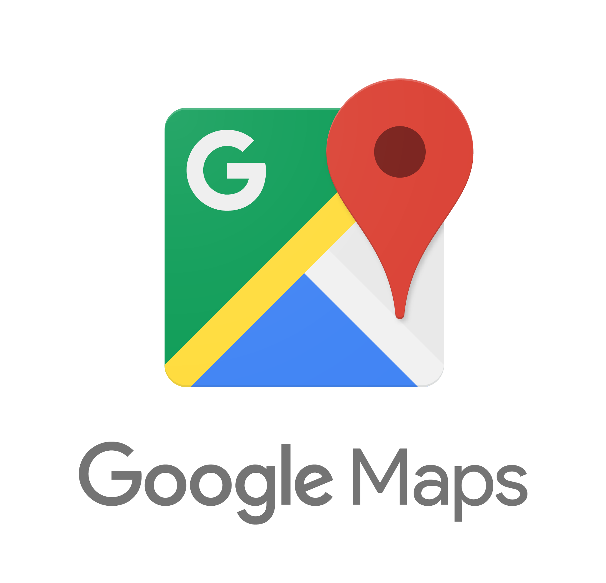

Quién soy
Mi nombre es Hernán Carracedo, Nací el 13 de agosto de 1977 en General Pico, La Pampa. Hoy vivo en Neuquén, patagonia argentina. Soy un Desarrollador Fullstack Junior en el cuerpo de uno Senior. Me considero organizado y metódico. Con un compromiso alto con el logro de resultados. Me gusta trabajar en equipo.
Me recibí de Analista Programador hace años y las habilidades adquiridas estuvieron stand by por mucho tiempo. Con los años las comencé a aplicar en pequeñas dosis en mi rol de soporte operativo en una empresa de telecomunicaciones y en mayor medida en proyectos personales.
Hoy mi desafío es dedicarme full time al desarrollo de aplicaciones web.
 hernanpampa@gmail.com
hernanpampa@gmail.com +54 9 299 123-4567
+54 9 299 123-4567
Formación
SECUNDARIO:
Bachiller con Orientación en administración bancaria | Colegio Don Eduardo de Chapeaurouge | 1990-1995
UNIVERSITARIO:
Analista Programador en Computación | Facultad de Ingenieria, Universidad Nacional de La Pampa | 1996-1999.
Cursos
- DESARROLLO WEB FULLSTACK | ACAMICA | Enero a octubre de 2019.
- PROGRAMACION EN BASE DE DATOS SQL SERVER | IT SERVICES AND TRAINING | 6 a 10 de junio de 2016.
- ADMINISTRACION BASES DE DATOS SQL SERVER | IT SERVICES AND TRAINING | 27 de junio a 1 de julio de 2016.
Habilidades


- 
Proyectos Significativos
SOPORTE WEB DE UN LIBRO EN PAPEL
Desarrollo de una web con el formato linea de tiempo como solución para ofrecer información extra a los lectores de un diario de viaje (libro en papel). El requerimiento fue poder enriquecer la experiencia de los lectores con imágenes en video, álbumes de fotos, mapas, glosario técnico, biografía de los personajes, etc. El libro relata una expedición de 2 meses a la montaña más alta del planeta y cada capítulo es un día de esa aventura donde hay impreso un código QR que al escanearlo vincula con el punto de la línea de tiempo dentro de ese viaje desplegando la informacion adicional.
APLICACIÓN PARA GESTIÓN DE CLÍNICA ODONTOLÓGICA
Desarrollo de una aplicación en ambiente web para reemplazar una ya existente de escritorio. La necesidad tenía que ver con el lanzamiento de una nueva clínica dental de un profesional que ya trabajaba en otra lugar previamente. Se debió realizar el traspaso de la información histórica a la nueva base de datos y ofrecer una aplicación web para proveer respaldo de la información en la nube y acceso a la agenda e historia clínica de pacientes desde cualquier lugar donde los odontólogos o las secretarias se encuentren.
WEB PARA COMPARTIR RUTAS DE GPS Y FOTOS
Desarrollo de una web que permite a los usuarios compartir sus rutas de GPS y descargarse las rutas de otros miembros de la comunidad. Está orientada fundamentalmente a la actividad de senderismo, escalada y bicicleta de montaña
Portafolio
Otros Intereses
Mi tiempo se reparte entre la programación y el desarrollo de aplicaciones y mi otra pasión, el alpinismo.
Con el correr de los años, me he propuesto aprender y avanzar en las actividades de montaña imponiéndome desafíos cada vez más exigentes. Entre muchísimas expediciones pude concretar tres que soñaba en los tiempos que daba mis primeros pasos: una travesía a través de los Hielos Continentales, escalar el Aconcagua y en el corazón de la cordillera del Himalaya, la cumbre del Everest, el punto más alto del planeta.
Al regreso junto a mi compañero nos propusimos un nuevo desafío de similar magnitud no ya desde lo físico, sino desde la disciplina y la exigencia intelectual: en 2017 publicamos el libro Hermano Everest, un diario de viaje donde plasmamos los dos meses de expedición en Himalaya.